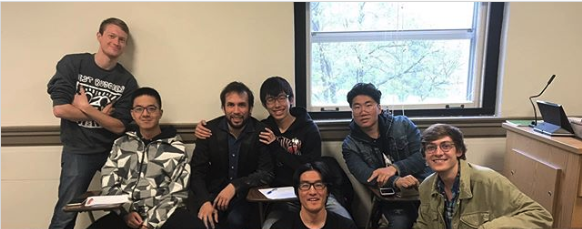
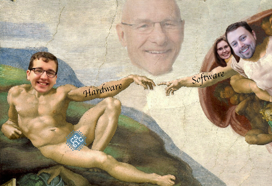

Description
-
COMP SCI 300: Programming II
(If you are reading this, you are probably considering majoring in CS. My two cents: If you are chossing between CS 200 and CS 220, take 220 if you don't have much experience in programming. I personally hate CS 200.) CS 300 is the second course of the intro-to-cs series at UW-Madison. It introduces Object-Oriented Programming and basic data structures including list, stack, queue, and BST. It also covers introduction to complexity analysis.
-
MATH 234: Multivariate Calculus
The third course of the calculus series at UW-Madison. If you are really interested in majoring in math, try to take MATH 375&376 instead as those two courses satisfy the prerequisites for way more upper-level courses than MATH 234&340 combined do (they are definitely more challenging though). The topics covered include calculus on parameterized curves, derivatives of functions of several variables, multiple integrals, vector calculus. The first two exams were pretty easy but be careful not to fall for the final.
-
STAT 327: Introduction to Data Analysis with R
This course is now STAT 303-305. It's a normal 3-credit class but it's divided into three parts and you can take any of those three one-credit-each courses. I consider it as more of an "Intro to R" than an "Intro to Data Analysis" class. Please take a look at RateMyProfessors before taking this class!
-

HISTORY 160: Asian American History: Movement and Dislocation
4 credit class that satisfies both ethnic studies and humanities. The review sessions are super useful as the professor literally gives out answers and all you need to do is to keep them in mind. I took it with Cindy Cheng, who was really nice and was willing to help students out. This class introduces you to a lot of stories of early asian immigrants, which was rarely in Chinese textbooks. The workload is a little bit heavy (about 30 pages of reading every week) but it was for sure worth it!
- 
-

ESL 118: Academic Writing II
I got assigned to ESL 117 at first and was reassigned to ESL 118 after the placement test in class. For the placement test, I feel that the structure of the essay is more important than finishing the essay. I planned to write a standard 5-paragraph essay but only had the time to finish the first three, so I wrapped up the conclusion paragraph in time and wrote down how I planned to finish the middle part. This class is roughly divided into three parts: SRP, GRP, and IRP. Those are basically 6-page-long papers. It is a class that takes a lot of time to get a good grade (the grade really depends on the instructor). DO NOT PROCRASTINATE ON THE PAPERS!
-

CS 61C @ Berkeley: Great Ideas in Computer Architecture (Machine Structures)
It was all fun and games until the exams. Being a Berkeley class means it's damn good but damn difficult. Exams are three hours long, which I hated. The peers had big brains and were willing to help each other out. Piazza was used a lot more than that in UW-Madison. Topics covered basic C, assembly, pipelined processors, caches, and parallelism. As far as I understand, the first half of CS 61C is like CS 354, and the second half is a little bit of CS 537 (OS) and CS 552 (Architecture) combined.
-
COMP SCI 577: Introduction to Algorithms
People say that this class is the most intellectually challenging class among undergraduate cs classes and Dieter's section is the hardest one. That being said, the takeaway is HUGE. I would strongly recommend taking it with Dieter if you have the chance. Dieter is really nice and his notes helps a lot. I'm fully expecting him to write a book off them. Exam averages are at about 60%, and getting a 70% usually guarantees an A in his section (for undergrads, graduate students might be curved differently...?). Topics covered D&C, DP, Greed, Network Flow and Computational Intractability. This class lays the foundation for coding interviews, so I would suggest taking this class ASAP (and grinding Leetcode problems) if you want to get an SWE internship.
-

COMP SCI 520: Introduction to the Theory of Computation
Amos Ron once said, "Everyone should take 577 instead. Later in life you will use what you learn in 577 on a daily basis, but you will not use what you learn in 520 ever again". This is true for most people. If you are not that into theory/compiler/PL, just take 577 instead. Although I passed the class with a descent grade, I feel like I was being "知其然而不知其所以然" almost the whole time. CS302@UVirginia, CS172@Berkeley and CS154@Stanford have a lot of practice problems that are of the same level of difficulty, and they post their slides online. The topics covered automata theory, formal languages, computability, undecidability and computational complexity. This is the class that makes "computer sciences" a hard science.
-

COMP SCI 540: Introduction to Artificial Intelligence
This class is a great "intro to AI" class, but it doesn't really cover much about the most popular topics of today's AI such as CNN, RNN and deep learning. Update: New iterations of this class cover a lot more of these modern topics on AI and ML. I would recommend taking Andrew Ng's deep learning specialization on Coursera instead if you have the motivation. If you are taking this class with Prof. Dyer, embrace yourself for a lot of quizzes on science fictions. The only one I could do was to tell Data and Lore (from Star Trek) apart. The topics covered some basics like search, game playing, (un)supervised learning, constraint satisfaction problem, SVM, neural nets, basic probability theory, bayesian nets, speech recognition and computer vision. Some in-depth knowledge were covered but they were not in the test, so don't worry too much about it if you feel lost in class.
-
PHILOS 211: Elementary Logic
4 credits social sciences XOR humanities, and this should be an easy A for people who took MATH 240 or COMP SCI 252. I took it with Michael Titlebaum, and he put all course materials online so I barely attended lectures. He did give awesome lectures, so it's a good opportunity for those of you who are really interested.
-
MUSIC 113: Clap for Credits Music in Performance
1 credit humanities class. Show up once per week, get an A. Note that this class can be repeated for credit for up to three times. All you got to do is to sit there, listen to music, and give a round of applause when the performance ends. You also have to do after-class quizzes but they are super easy.
-
BIO 141 @ UWC: Heredity
This class can be transferred back as a 3-credit bio class. $789 for a three-credit class is a good deal IMO, especially for out-of-state and international students. This class should be an easy A for you if you had taken biology in a Chinese high school, but the workload will be huge if you didn't pay attention in high school (which was my case). That being said, the course can be transferred back as long as you get a C (72%-78%), so three hours a week should meet the minimum requirements. I recommend this to anyone who hates bio and doesn't have anything to do during a winter break.
-
COMP SCI 513: Numerical Linear Algebra
Prof. Ron (and only him) has been teaching this class for around twenty years or so, and he is a legend. His existence alters the balance of power in the great conflict. Topics covered Matlab, SVD, QR factorization, LU factorization, Cholesky factorization, stability and conditioning, pivoting, bisection, GMRES, PCA.
-
COMP SCI 537: Introduction to Operating Systems
This is my favorite class at UW-Madison, both because of the topics covered and Prof. Shivaram himself. Prof. Shivaram has a strong Berkeley vibe. He answers every question in class clearly, is very active on Piazza, and is a vim grandmaster. He is the nicest professor I've ever had. Extremely project-heavy class, the actual workload should be at least 5 credits, but you learn a lot. Textbook used was OSTEP by Remzi & Andrea, publicly free online.
-
CS 564: Database Management Systems: Design and Implementation
This class is twofold: The first part talks about basic syntax of DBMS languages like SQL (we used SQLite), and some of the programming assignments are in Python. The second half is about the internal sturctures of database management systems: The concepts in this part of the class is surprisingly easy if you have taken CS 537 before. There are three programming assignments (first in SQL and Python, last two in C++ IIRC) done in groups of three, and the last one is painful. Start early and try to pick good teammates if possible. Prof. Koutris loves reusing questions with similar structures in exams, so doing a lot of past exams definitely helps a lot with your grade. Here are some past exams. Don't cheat in this class (or any other classes, duh)! Since this semester, I also started to track my time spent on each class. For your information, I spent a total of ~100h.
-
CS 576: Introduction to Bioinformatics
It's more of a computer science class than a biology class, so don't worry if you suck at Biology like I do. Only the first week covered some biology stuff, and the rest were straight up applications of computer science. This class uses a flipped format in which students watch lecture before class and participate in group discussions in class. I have mixed feelings about it. All assignments are in Python. Weekly programming assignments are done with your group, and there are also ~5 homework assignments. The homework assignments take a lot of time: start early and ask for help. Some knowledge in CS 577 (dynamic programming) and introductory statistics (clustering techniques) definitely helps, so if you haven't taken those class before 576, be prepared to spend extra time if you want to keep up with the pace. Prof. Colin Dewey was very helpful on Piazza. I spent a total of ~55h.
-
CS 639: Computer Vision
This is an experimental class, the course website is available here. The course material is a mixture of CS 766 and another class I cannot remember. The programming assignments are in Matlab, which is definitely less ideal than using Python IMO, but most of the class is about things like computational photography and image processing, so it is what it is. A huge portion of the class is spent on a research project (just like in grad-level courses), and I absolutely love this part of the class. My group worked on Real-time Vision Task with a High Degree of Freedom Robot Arm. I spent a total of ~75h.
-
CS 736: Advanced Operating Systems
This is the first graduate-level course I took, and oh boy did I mess it up, but I still ended up learning a lot (how to read a 20-page paper in an hour, what to do in paper review groups when you didn't read the paper but want to act like you did, how to extend a 3-page long experiment report to ten pages, etc. :P) If you are an undergraduate student interested in systems research, CS 744 might be a good first class to take. This is a really, really heavy class. It is mostly reading papers before class and reviewing them in class. We also did some research projects in groups of 1-3. The reading schedule was very heavy -- sometimes we go through three papers per class. IIRC, a total of ~40 papers are covered. A list of my paper review notes are available here. Looking back, I could have done better if I had consolidated my knowledge on undergraduate OS before I read the papers. Some experience in reading system papers would definitely have also helped. Nevertheless, it was a lot of fun and I learned a lot (on reading papers, evaluating a research project, designing a research project from scratch, etc.), and Prof. Andrea was very nice. I spent a total of ~160h.
-
CS 640: Introduction to Computer Networks
This class is, contrary to popular belief, by no means a class with a small workload. There are a total of 4 projects and 4 quizzes (no regular midterms/finals), and IMO the projects have an increasing difficulty, so brace yourself. It is a pretty standard class on computer networks. It really sucked that this class was delivered online due to COVID. I spent a total of ~50h.
-
CS 759: High Performance Computing for Engineering Applications
First off, I love this class. It sits on top of the list of my favorite classes at UW-Madison alongside with CS 537. Prof. Dan Negrut is the type of professor you want in all of your classes. Super funny person, and he brings a lot of vitality to the zoom lectures. I maintained a course note on this class. Topics covered include an introduction to CUDA programming, OpenMP, and MPI. You'll also have a better understanding of what happens on one core, hardware for parallel computing, and the mindset for parallel computing. My main takeaway is a firmer understanding of the GPUs/hardware I'm using: Before this class, I just treated GPUs/CUDA as black boxes that magically speed things up. There are weekly programming assignments. It's a lot of work, but it's not hard, in the sense that they are less intellectually-challenging than paper reading classes IMO. Plus, the assignments with the two lowest scores are dropped. This is an "accelerated" course: It has three 75-minute lectures per week for two months, and the rest of the semester is left for students to work on a final project. For my final project, I worked on Cautiously Aggressive GPU Space Sharing to Improve Resource Utilization and Job Efficiency. This has been such a fun ride. I spent a total of ~150h.
-
CURRIC 277: Video Games and Learning
Practically, the whole course is centered around this publication (Learning by Design: Good Video Games as Learning Machines). We also learned about some other tid bits of how video games help with learning. The professor streams lectures on Twitch. Apart from the weekly discussions, the biggest assignment is a final paper of ~10 pages, the first draft of which is due in the middle of the semester. Pretty chill course. I spent a total of ~40h.
-
SOIL SCI 101: Forum on the Environment
Super chill class: show up and get an A while learning fun stuff. The weekly lecture is 2 hours long. The first half of the class is usually some professor/researcher presenting a introductory lecture on a subtopic of environmental science. For example, topics include wastewater treatment, air pollution and air quality, global climate change impacts in Wisconsin, sustainable waste management in Dane county, population dynamics, etc. The lectures are usually super entertaining. When you visit a state park after taking this class, you'll notice a lot of previously-missed-out details mentioned in the lectures. In the second half of the class, students are divided into groups to complete a worksheet on topics related to the lecture. The other assignments include: (1) weekly quizzes on a chapter from the textbook, (2) weekly personal challenges (complete 1 every week from this list), and (3) a final group project. This class makes you a better person in conserving the environment. My roommates now perhaps hate me for asking them to recycle things meticuously and not waste any food. I spent a total of ~40h.
-
COMP SCI 744: Big Data Systems
Shivaram is hands down one of the best lecturers/explainers in the CS department. All hail Shivaram! The course website is available here (edit the URL to see the previous offerings). Topics covered include infrastructure, scheduling, ML, SQL frameworks, stream processing, and emerging data/hardware models, which all scatter broadly across the system aspects of big data. There's a new class starting from Spring 2022, "Advanced Machine Learning Systems", that should have a stronger emphasis on systems for ML, ML for systems, and the intersection in between. The course itself is a pretty typical grad course at UW Madison: each class covers 1-2 research papers, and students spend the whole semester working on a course project. Overall I think this class is great for undergraduates who want to do systems research or want to know more about systems design (if they lean more toward the industry track).
-
MATH 535: Mathematical Methods in Data Science
Of all the MATH 5xx classes, this one might be on the easier side. Similar to all other math courses I have taken here, the exams are easier than the content covered in lectures. Prof. Chen's offering reused a lot of slides from Prof. Sebastien Roch's offering in Fall 2020. This course mainly introduces some mathematical foundations of data science. Pretty much all the course materials are available online, so see it for yourself. I really didn't spend too much time on this course to give more useful advice ;)